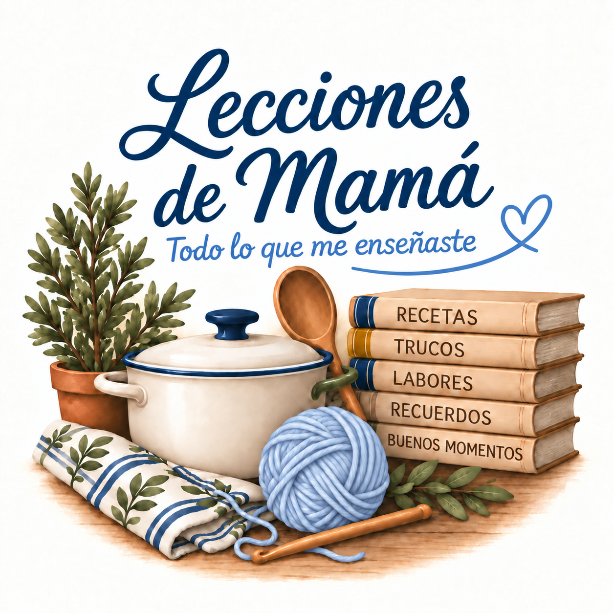

BIENVENIDA
Todo lo que me enseñaste
Un lugar para reunir recetas, labores, recuerdos y pequeñas enseñanzas de mamá. Un homenaje hecho de cosas sencillas que siguen acompañándonos.

EL RINCÓN DE MAMÁ
Pequeñas lecciones para recordar
🍲
Recetas
Sabores de casa, platos de siempre y nuevas recetas para seguir compartiendo.
Entrar →🧶
Labores
Crochet, punto, manualidades y todo lo hecho con las manos y con cariño.
Próximamente →♡
Recuerdos
Historias, momentos y detalles que merece la pena conservar.
Próximamente →🌿
Sobre Mamá
Su historia, sus costumbres y todo lo que dejó en quienes la queremos.
Próximamente →“Lo que mamá nos enseña, nos acompaña siempre.”